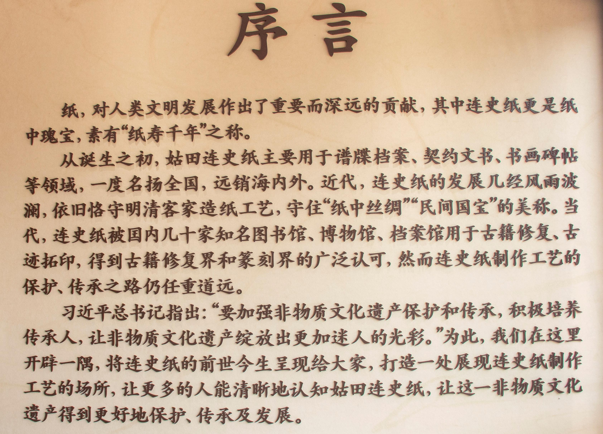
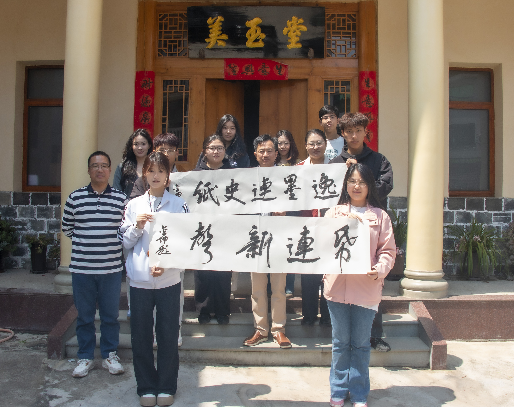
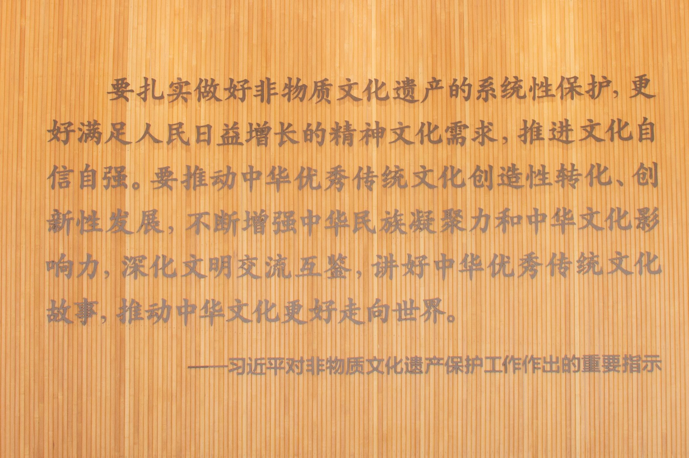
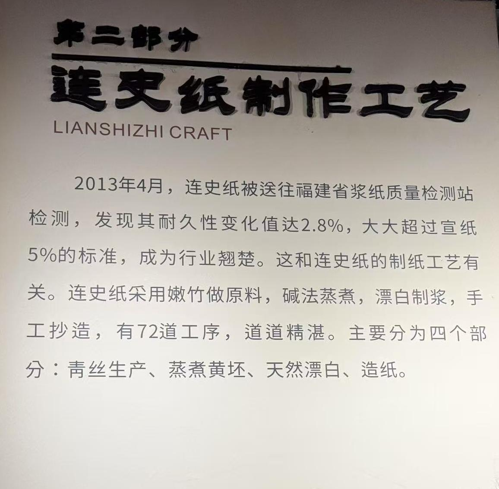
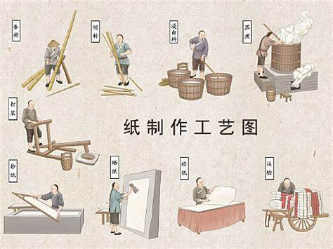

逸墨工作室在依托美玉堂及在非遗传承人邓金坤先生的大力支持下，开创了一系列有关连史纸的文创产品及相关研发新品

连史纸，因明代《连山堂文集》而得名，产自福建连城，历史悠久，制作工艺精湛，需历经 72 道工序，道道彰显匠心，其纸白如玉、厚薄均匀、防虫耐热、久不变色，是古代贵重书籍、碑帖、契文、书画、扇面等的首选用纸。为传承这一非遗技艺，我们逸墨工作室应运而生。
在非遗传承方面，我们坚守传统工艺，严格遵循古法制作流程，确保每一张连史纸都承载着正宗的非遗基因。积极培养传承人，通过开展培训课程、研学活动等形式，吸引年轻人投身连史纸制作，为非遗传承注入新生力量，让这门古老技艺在岁月长河中生生不息。
于经济价值创造而言，工作室与多家企业达成合作意向，借助其在书画、印刷、文创等领域的市场优势，拓宽连史纸销售渠道，提升其市场知名度与占有率，推动产业发展，创造可观经济效益，为地方经济添砖加瓦。
在社会价值方面，我们以开放姿态欢迎社会各界参观体验，开展非遗进校园、进社区活动，增强大众对非遗手工纸的认知与热爱。同时，将连史纸融入现代生活场景，开发多样化文创产品，满足人们个性化需求，让古老技艺融入当代生活，丰富人们精神文化生活。
我们的终极愿景，是让连史纸这一非遗瑰宝真正走进千家万户，成为人们日常生活触手可及的美好存在。让大众在书写、绘画、阅读间，感受非遗手工纸的独特魅力与深厚底蕴，领略中华优秀传统文化的非凡风采，重拾对传统技艺的珍视与传承。

逸墨工作室通过深入的市场调研与分析，明确了连史纸在文化传承、艺术创作、古籍修复等领域的独特地位与广阔前景。面对市场竞争与行业痛点，我们提出了一系列切实可行的解决方案，从国家政策扶持到社会文化宣传，从行业监管规范到个人技艺传承，全方位为连史纸的可持续发展保驾护航。 在产品开发与商业运营方面，我们不仅坚守传统工艺，确保连史纸的高品质与文化内涵，更积极探索创新，开发出文创产品、技艺模拟经营游戏、个性化定制等多种业务模式，满足不同市场群体的需求。通过线上线下融合的销售渠道、高校合作的科研与人才培养模式，以及新技术、新工艺的应用，我们为连史纸的市场拓展与品牌建设注入了强大动力。 未来，我们将继续秉持初心，借助政府支持与产业协同的力量，推动连史纸项目在乡村振兴、文化传承、社会就业等方面发挥更大作用。我们坚信，通过团队的不懈努力与社会各界的共同关注，连史纸不仅能够成为连接过去与未来的文化桥梁，更能在国际舞台上展现中华传统文化的独特魅力，成为具有国际影响力的文化品牌。 让我们携手共进，为连史纸的传承与发展续写辉煌篇章，让这一古老技艺在新时代绽放出更加迷人的光彩，为中华文化的伟大复兴贡献一份坚实的力量。
>逸墨工作室始终在政策的引领完成对非遗文化的传承与创新

逸墨团队指导老师与指导专家：
指导老师：李建文，于蓓蓓，王祈帆，蔡思琪，林秀琴，薛翔鸿
指导专家：邓金坤
逸墨团队：徐雨琪，余舒琪，史志钊，郑新浩，陈宇聪，陈荣强，蔡明君，刘心宁，王茜，周灵依，李富威，上官诚驹，吴慧苗，张帅帅，雷胜举。
连史纸制作工艺
>
连史纸制作大致流程
